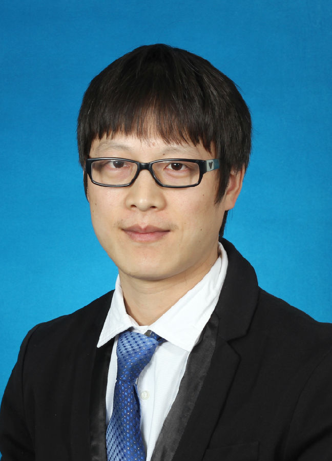

<!DOCTYPE html PUBLIC "-//W3C//DTD XHTML 1.0 Transitional//EN" "http://www.w3.org/TR/xhtml1/DTD/xhtml1-transitional.dtd">
<html xmlns="http://www.w3.org/1999/xhtml">
<head>
<meta http-equiv="Content-Type" content="text/html; charset=utf-8" />
<title>Yongbing Zhang's Homepage</title>
<style type="text/css">
<!--
.STYLE8 {
	font-family: Georgia, "Times New Roman", Times, serif;
	font-size: 32px;
	font-style: italic;
	color: #000033;
}
body,td,th {
	font-family: Times New Roman, Times, serif;
	font-size: 18px;
}
.STYLE17 {font-family: Georgia, "Times New Roman", Times, serif}
.STYLE18 {font-size: 18px}
.STYLE35 {color: #CCCCCC}
a:link {
	text-decoration: none;
	color: #0099FF;
}
a:visited {
	text-decoration: none;
}
a:hover {
	text-decoration: none;
	color: #009933;
}
a:active {
	text-decoration: none;
}
.STYLE90 {color: #FF0000; font-weight: bold; }
.STYLE98 {
	color: #333333;
	font-weight: bold;
	font-size: 14px;
}
.STYLE188 {
	color: #4f4f4f;
	font-family: Arial, Helvetica, sans-serif;
	font-size: 14px;
}
.STYLE189 {
	font-family: Arial, Helvetica, sans-serif;
	font-size: 14px;
}
.STYLE197 {font-family: Arial, Helvetica, sans-serif}
.STYLE198 {font-size: 17px; font-family: Arial, Helvetica, sans-serif; }
.STYLE200 {
	font-size: 14px;
	font-family: Arial, Helvetica, sans-serif;
	color: #4f4f4f;
}
.STYLE238 {
	font-size: 24px;
	color: #CC3300;
	font-weight: bold;
}
.STYLE256 {font-size: 17px; font-family: Arial, Helvetica, sans-serif; font-weight: bold; }
.STYLE257 {
	color: #6666FF;
	font-weight: bold;
}
.STYLE258 {font-size: 18pt; color: #6666FF; }
.STYLE267 {color: #333333; font-weight: bold; font-size: 14px; font-family: Arial, Helvetica, sans-serif; }
.STYLE270 {font-family: "新宋体"}
-->
</style>
</head>

<body>
<blockquote>
  <table border="0" width="88%">
    <tbody>
      <tr>
        <td width="18%" height="208"><div align="center" class="STYLE90" src="">
            <div align="left"></div>
        </div></td>
        <td width="82%"><p><br />
          <span class="STYLE8"><span class="STYLE238">Dr. Yongbing Zhang </span><br />
          </span><span class="STYLE18"><span class="STYLE197"><span class="STYLE98"><br />
            Email: </span></span></span><span class="STYLE189"><a href="mailto: jianzhang.tech@gmail.com"></a></span><span class="STYLE189"><br />
            </span><span class="STYLE267">Homepage:  </span><span class="STYLE189"><a href="https://jianzhang.tech"></a><br />
            </span><a href="https://scholar.google.com/citations?user=7brFI_4AAAAJ&amp;hl=en" class="STYLE189"><br />
            </a><span class="STYLE256"><br />
            </span><span class="STYLE198"><br />
            </span></p>        </td>
      </tr>
    </tbody>
  </table>
  <br />
  <hr />
  <p align="justify"><span class="subtitle1"><span style="font-size: 22pt"><b style="mso-bidi-font-weight: normal"><span 
style="FONT-FAMILY: 'Monotype Corsiva'; COLOR: green; mso-bidi-font-family: Arial"><a name="Bio" id="Bio"></a><span class="STYLE258">Biography</span></span></b></span><span class="STYLE257" style="font-size: 18pt"><span 
style="FONT-FAMILY: 'Bauhaus 93'; mso-bidi-font-family: Arial">
    <o:p></o:p>
  </span></span></span><br />
    <br />
  <span class="STYLE17"><span class="STYLE188"> Dr. Yongbing Zhang </span></span><span class="STYLE17"><span class="STYLE188"><span class="STYLE200"></span></span></span>... ... </p>
  <p align="justify">http://www.sz.tsinghua.edu.cn/publish/sz/139/2013/20130712170817703523468/20130712170817703523468_.html</p>
  <span class="STYLE270">姓名：张永兵<br />
  职称：副研究员<br />
  所属学科：自动化<br />
  【联系方式】<br />
  电话：2603-6765<br />
  Email: zhang.yongbing@sz.tsinghua.edu.cn<br />
  办公地址：深圳市大城清学华大学F楼305F<br />
【个人简历】<br />
2000/9 - 2004/7，哈尔滨工业大学，外语专业，本科<br />
2004/9 - 2006/7，哈尔滨工业大学，计算机科学与技术，硕士<br />
2006/9 - 2010/7，哈尔滨工业大学，计算机科学与技术，博士<br />
2010/9 - 2012/10，清华大学，深圳研究生院，博士后<br />
2012/11 - 2014/11，清华大学，深圳研究生院，讲师<br />
2014/12 - 至今，清华大学，深圳研究生院，副研究员<br />
【教学】<br />
现代信号处理、视频处理与宽带通信、大数据的采集与智能处理<br />
【研究领域】<br />
主要研究方向为信号处理、视频压缩、计算摄像、大数据采集、深度学习。在信号处理和多媒体通信相关的国际著名期刊和学术会议上，共发表SCI、EI 收录论文60 余篇，获2015年度计算机图像处理著名国际会议VCIP唯一一篇最佳学生论文奖。国际学术期刊论文34篇（包括IEEE Transactions汇刊第1作者论文11篇）；EI 收录30 多篇，包括数据压缩领域的国际顶级学术会议DCC，信号处理的国际著名学术会议ICASSP，图像处理的国际著名学术会议ICIP 等；进行了国际学术报告10余次。申请并公开3项欧洲专利、1项美国专利、50余项国家发明专利（授权21项）。曾先后代表哈尔滨工业大学、清华大学担任中国国家音视频编解码标准AVS工作组会员。2006年至今积极参与AVS，贡献20多个视频编码提案。<br />
主持/参加的项目：<br />
国家自然科学基金面上项目，61571254、深度图获取及超分辨率算法研究、2016/01-2019/12、65万元、在研、主持<br />
国家高技术研究发展计划(863计划)，2015AA015901，基于光场的真三维视频采集与生成、2015/01-2017/12、752万元、在研、参加<br />
国家自然科学基金NSFC-广东联合基金重点项目，U1301257、高清3D裸眼视频内容生成与编码、2014/01-2017/12、255万元、在研、参加<br />
国家自然科学基金NSFC-广东联合基金重点项目，U1201255、多维数字媒体的稀疏表示、结构化处理与联合编码、2013/01-2016/12、260万元、在研、参加<br />
国家自然科学基金面上项目，61170195、立体视频高效编码算法研究、2012/01-2015/12、58万元、结题、主持<br />
【研究成果】<br />
发表国际期刊、会议论文50余篇，获国家授权发明专利21项。部分代表性论文如下：<br />
[1]Yongbing Zhang, Tao Shen, Xiangyang Ji, Yun Zhang, Ruiqin Xiong, and Qionghai Dai “Residual Highway Convolutional Neural Networks for in-loop Filtering in HEVC,” accepted by IEEE Trans on image processing, 2018.<br />
[2]Yongbing Zhang, Lulu Sun, Chenggang Yan, Xiangyang Ji, Qionghai Dai “Adaptive Residual Networks for High-Quality Image Restoration,” accepted by accepted by IEEE Trans on image processing, 2018.<br />
[3]Yongbing Zhang, Weixin Jiang, and Qionghai Dai, “A nonlinear optimization approach for Fourier ptychographic microscopy,” Optics Express, vol. 23, no. 26, pp. 33822-33835, Dec. 2015.<br />
[4]Yongbing Zhang, Yulun Zhang, Jian Zhang, and Qionghai Dai, “CCR: Clustering and collaborative representation for fast single image super-resolution,” Accepted by IEEE Trans. Multimedia, 2015.<br />
[5]Yongbing Zhang, Long Xu, Xiangyang Ji, and Qionghai Dai, “A Polynomial Approximation Motion Estimation Model for Motion Compensated Frame Interpolation,” Accepted by IEEE Trans. on Circuits and System Video Technology (TCSVT), 2015.<br />
[6]Yongbing Zhang, Weixin Jiang, Lei Tian, Laura Waller, and Qionghai Dai, “Self-learning based Fourier ptychographic microscopy,” Optics Express, vol. 23, no. 14, pp. 18471-18486, Jul. 2015.<br />
[7]Yongbing Zhang, Jian Zhang, and Qionghai Dai, “Texture aided depth frame interpolation,” Signal Processing: Image Communications, vol. 29, no. 8, pp. 864-874, Sep. 2014.<br />
[8]Yongbing Zhang, Xiangyang, Haoqian Wang, and Qionghai Dai, “Stereo Interleaving Video Coding with Content Adaptive Image Subsampling,” IEEE Trans. on Circuits and System Video Technology (TCSVT) , vol. 23, no. 7, pp. 1097-1108, Jul. 2013.<br />
[9] Yongbing Zhang, Haoqian Wang, and Debin Zhao, “Upsampling oriented frame rate reduction,” Signal Processing: Image Communications vol. 28, pp. 254-266, Mar. 2013. (SCI)<br />
[10]Yongbing Zhang, Debin Zhao, Jian Zhang, Ruiqin Xiong and Wen Gao, “Interpolation Dependent Image Downsampling,” IEEE Trans. on Image Processing (TIP), vol 20, no. 11, pp. 3291-3296, Nov. 2011<br />
[11]Yongbing Zhang, Xinguang Xiang, Debin Zhao, Siwei Ma and Wen Gao, “Packet video error concealment with auto regressive model,” IEEE Trans. on Circuits and System Video Technology (TCSVT), vol. 22, no. 1, pp. 12-27, Jan. 2012<br />
[12]Yongbing Zhang, Debin Zhao, Siwei Ma, Ronggang Wang and Wen Gao, “A Motion Aligned Auto-regressive Model for Frame Rate up Conversion,” IEEE Trans. on Image Processing (TIP), vol 19, no. 5, pp. 1248-1258, May. 2010<br />
[13]Yongbing Zhang, Debin Zhao, Xiangyang Ji, Ronggang Wang and Wen Gao, “A Spatio-temporal Auto-regressive Model for Frame Rate up Conversion,” IEEE Trans. on Circuits and System Video Technology (TCSVT), vol. 19, no. 9, pp. 1289-1301, Sep. 2009<br />
[14]Yongbing Zhang, Debin Zhao, Hongbin Liu, Yongpeng Li, and Siwei Ma, “Side Information with Auto-regressive Model for Low-delay Distributed Video Coding,” Journal of Visual Communication and Image Representation (JVCIR), vol. 23, no.1, pp. 229-236, Jan. 2012<br />
[15]Xiangyang Ji, Yongbing Zhang and Qionghai Dai, “Opposite Parity Packing Arrangement for 3D Stereoscopic Video Coding,” IET Electronics Letters (EL), vol 47, no. 21, pp. 1180-1181, Oct. 2011.<br />
【学术兼职】<br />
2013.04 - 现在         IEEE Member<br />
2013.11 - 现在         YOCSEF深圳AC委员<br />
2012.01 - 现在         评审专家，国家自然科学基金委员会<br />
2013.06 - 现在         评审专家，深圳市科技专家委员会<br />
2013.05 - 现在         评审专家，东莞市科协<br />
担任8个国际著名期刊的审稿人，包括IEEE Transactions on Image Processing、IEEE Transactions on CSVT、Journal of Visual Communication and Image Representation、Signal Processing and Image Communication、IEEE Transactions on Multimedia 等。<br />
【指导学生所获荣誉】<br />
2017.09        国家奖学金，宋鹏鸣，硕士研究生<br />
2017.06        2017年度清华大学优秀硕士学位论文奖，张宇伦，硕士研究生<br />
2017.06        2017年度清华大学优秀硕士学位论文奖，蒋伟鑫，硕士研究生<br />
2016.09        国家奖学金，张宇伦，硕士研究生<br />
2016.09        国家奖学金，蒋伟鑫，硕士研究生<br />
2016.07        2016年度清华大学优秀硕士学位论文奖，律慧瑾，硕士研究生<br />
2015.12        2015年IEEE VCIP最佳学生论文奖，张宇伦，硕士研究生<br />
【奖励荣誉】<br />
1、2016年国家科技进步二等奖，新一代立体视觉关键技术及产业化（排名4） <br />
2、2015年广东省科技进步一等奖，动态立体视觉系统关键技术及应用，（排名4）<br />
3、2015年IEEE VCIP最佳学生论文奖<br />
4、2013年北京市科学技术二等奖，大规模智能视频监控新技术及应用（排名5）<br />
5、2015年深圳市青年科技奖，<br />
6、2015年“广东特支计划”科技创新青年拔尖人才</span></blockquote>
<noscript>
</noscript>
<!-- End of StatCounter Code for Default Guide -->
</body>
</html>
